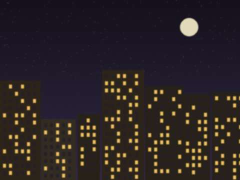
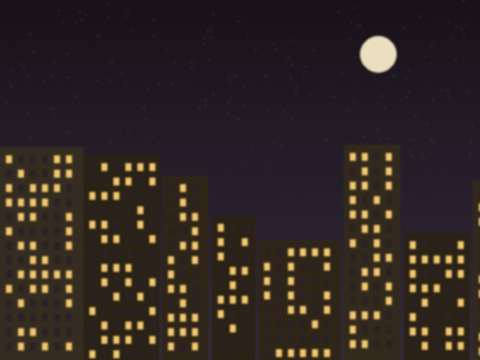
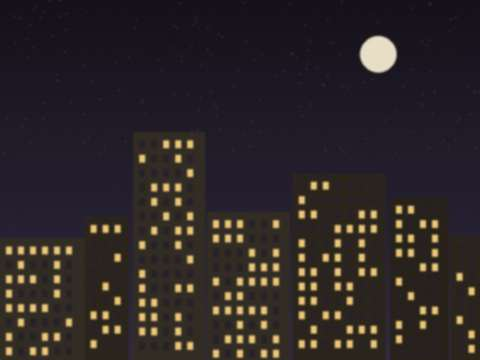
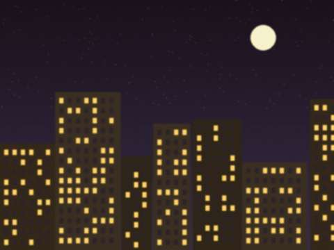
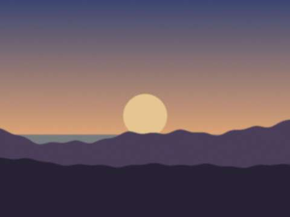
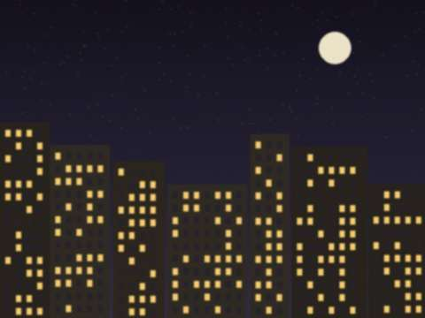
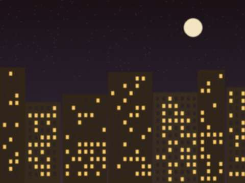
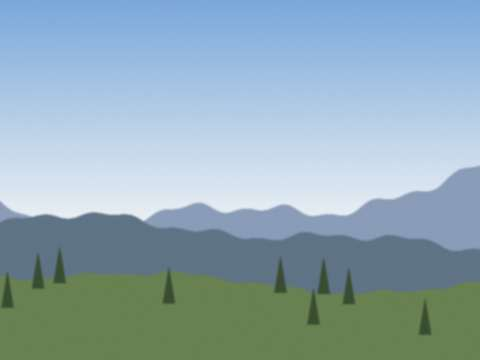
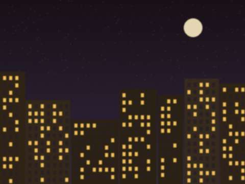
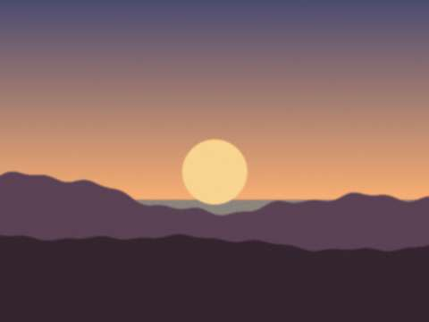

Aug132026
Thursday, August 13th, 2026 at 1:00 am by Almazbek Dosmatovich
Moon new. No cloud. Seventy-one in an hour, counted by my grandson with a clicker from the football match. Four fireballs. At the end the whole field fell silent and a girl of nine said, "Is that all?"
"For this year," I said. "There's always the next one."
In Spain they had an eclipse of the Sun this week, which we did not see. We have seen others.
Posted in Sky | No Comments »
Sep82025
Monday, September 8th, 2025 at 12:30 am by Almazbek Dosmatovich
Tonight, a total lunar eclipse again: the Moon turned slowly copper over the eastern ridge and stayed so for about eighty minutes. Fifteen children from the club, seven parents and Altynai, the young teacher who took over physics. She runs the club now, and I come with a thermos.
I am tired and I am happy. This is how a teacher should end.

Totality, 8 September 2025.
Posted in Sky | No Comments »
May112024
Saturday, May 11th, 2024 at 11:10 pm by Almazbek Dosmatovich
Last night I was washing dishes and my wife called me from the porch: "Almazbek, the sky is on fire." Low in the north, a pink and red glow, big as a mountain, with pale rays going up. It lasted half an hour. I thought: it must be a fire in a village, but there was none. Then the internet said: aurora, from a huge solar storm. At our latitude! I have been looking at the sky for sixty years and I had never seen one.
My former pupils sent seventeen photos on Tulpar in the night, all from different villages. In every one the red glow is in the north.

The red glow low in the north, from a phone. Sent by a former pupil from Kyzyl-Adyr.
Posted in Sky | 2 Comments »
Aug132023
Sunday, August 13th, 2023 at 10:40 pm by Almazbek Dosmatovich
First time I watch the Perseids from a garden chair instead of the school roof. My wife brought a blanket. The sky was very good: no Moon until near dawn, forty an hour. My grandson is eight and he counted all of them, aloud, in two languages.
Retirement. It is not bad.
Posted in Sky | No Comments »
Dec222020
Tuesday, December 22nd, 2020 at 7:20 pm by Almazbek Dosmatovich
Yesterday Jupiter and Saturn were so close that they looked like one star, low in the south-west after sunset. The telescope showed both in the same field of view: the big banded Jupiter and its four moons, and the small ringed Saturn beside it. The last time they were this close was 1623, the year before Galileo died. (I checked: he died in 1642. This is the sort of mistake one makes when excited.)
Eight children on the roof, with masks, in a line, each waiting a turn. Just like the old days, only with masks.
Posted in Sky | No Comments »
Jul202020
Monday, July 20th, 2020 at 11:50 pm by Almazbek Dosmatovich
The comet of the year. Low in the north-west after sunset, with a long tail like a brush stroke. I took my wife, my grandson and the dog up to the school roof (the key still works). The comet hung under the Plough, fuzzy and calm, with a tail that was easy to see in binoculars.
No quarantine would stop me. I wore the mask on the stairs and took it off on the roof.

NEOWISE from the roof. Taken by my grandson with my phone.
Posted in Sky | No Comments »
Jun22019
Sunday, June 2nd, 2019 at 10:45 pm by Almazbek Dosmatovich
A week ago something strange: a line of thirty or more small bright lights, one behind the other, travelling slowly across the sky like beads on a thread. Half of the parents called me. Several said they had written to Tulpar chat and the chat said it was a UFO.
I looked it up: a new American company launched many satellites at once and they travel in a train for a few days. Not UFOs, just a very long advertisement. The children were disappointed. I told them: this is also the sky now.
Posted in Sky | No Comments »
Jul282018
Saturday, July 28th, 2018 at 2:15 am by Almazbek Dosmatovich
The longest lunar eclipse of the century. The whole valley was in bed, and the club, thirty-one of them with parents, was on the football field behind the school at one in the morning. The Moon red and low in the south-east, and below it, bright and orange, was Mars, closest to us since 2003. A red Moon and a red planet, side by side.
A mother from the village brought samsa at 2 a.m. in a basket. This is the proper way to watch an eclipse.

The Moon and Mars over the football field.
Posted in Sky | 1 Comment »
Aug222017
Tuesday, August 22nd, 2017 at 9:00 pm by Almazbek Dosmatovich
Yesterday the shadow of the Moon crossed America from one ocean to the other. We saw it on the internet at the school, with the sound turned off. Natalia's cousin in Oregon sent her photographs, and she brought them to the club. In one the whole sky has gone dark at midday, and there are people standing in a field with their arms up.
Natalia asked: "Will we have one?" I said not for a long time; I looked it up, and I will not be here for the next one over our valley. Perhaps she will.
Posted in Sky | No Comments »
Mar212015
Saturday, March 21st, 2015 at 10:05 am by Almazbek Dosmatovich
Yesterday a partial eclipse of the Sun, a small one for us, about a fifth. The children, who have seen better, were not very excited. But a new boy of the 5th class, who had never seen an eclipse, looked through the filter, went silent, and later said that it looked like a coin.
I do not mind a small bite. Somebody sees it first.
Posted in Sky | No Comments »
Aug102014
Sunday, August 10th, 2014 at 11:30 pm by Almazbek Dosmatovich
The biggest Full Moon of the year rose over the ridge at sunset, orange and round. It's not "that" much bigger, I tell the children, only a bit, but it feels big. I stood at the school gate with a bag of apricots and watched them walk home looking up.
The Perseids were poor: the Moon was too bright. I counted eight. The honest number.
Posted in Sky | No Comments »
Dec12013
Sunday, December 1st, 2013 at 9:00 pm by Almazbek Dosmatovich
The comet that was going to be the "comet of the century" came close to the Sun on Thursday and fell apart. We had been waiting since the spring. Pupils asked if the sky had lied to us. I said: no. The sky does not lie, it only does not promise. A comet is a heap of ice and dust, and it is allowed to die.
A good lesson, in the end. Better than a bright comet, maybe.
Posted in Sky | No Comments »
Feb162013
Saturday, February 16th, 2013 at 7:00 pm by Almazbek Dosmatovich
Yesterday a meteor exploded over the Russian city of Chelyabinsk; thousands of windows broke. In school today every child asked me: could it come here? I said yes, it could, but the chance is very small, and we are watching the sky anyway. They wrote questions on the blackboard. The first one: "What if it came during the exam?"
I explained the difference between a meteor and a meteorite. I explained again.
Posted in Sky | No Comments »
Jun62012
Wednesday, June 6th, 2012 at 8:50 am by Almazbek Dosmatovich
A rare day: the planet Venus walked across the face of the Sun, a small dark dot, from before our sunrise until about eleven. It will not happen again for 105 years. The club met on the school yard at 5:30 in the morning with the welded-glass filters. At 6:10 the Sun came up over the hill with a small black ball on its edge, and a boy of the 5th class said "it's a seed."
I took the whole school out, including the headmaster and the cook. The cook liked it the most. She asked if Venus does this on purpose.

A phone picture through a welding filter, 07:12. The dot is at 4 o'clock.
Posted in Sky | 1 Comment »
Jun162011
Thursday, June 16th, 2011 at 3:40 am by Almazbek Dosmatovich
Tonight, in the small hours, a total lunar eclipse over the Tian Shan, one of the longest for years. The Moon hung low over the southern ridge, dark copper, and came out gradually, from rust to silver. Because it was low, it looked huge, with the apricot trees of Mukhtar-aga's garden in front of it. I took twelve pictures and eleven were bad.

The eclipsed Moon low over the garden.
Posted in Sky | No Comments »
Feb252009
Wednesday, February 25th, 2009 at 10:10 pm by Almazbek Dosmatovich
A faint green comet, just visible in Leo near the planet Saturn. You need dark skies and binoculars, and this winter we have dark skies, God knows. Twelve children on the roof in blankets, and one old pair of binoculars passed from hand to hand like a bowl of tea.

Lulin: the pale smudge near the centre of the photo.
Posted in Sky | No Comments »
Jan102009
Saturday, January 10th, 2009 at 11:15 pm by Almazbek Dosmatovich
Minus twenty, no light in the valley between five and midnight, and the sky is a different place. The Milky Way goes over our roof like a road in snow. On a night like this the club counted seven satellites in one hour and a faint, quick glow that we think was a flare from an Iridium. I have not seen so many stars since I was a student, on a field trip in 1982.
The headmaster has allowed the club to use the gym for a "warm station": a stove and a kettle, between the roof and the ladder, so the children do not freeze.
I know what this winter means for the people. I am an old schoolteacher. I carry both things.
Posted in Sky | 1 Comment »
Aug12008
Friday, August 1st, 2008 at 8:30 pm by Almazbek Dosmatovich
Today the Moon covered the Sun again: total in Siberia and Mongolia, not for us. Less than half covered at our place, in the late afternoon, so we saw a low yellow Sun with a dent in it above the mountains. A truck driver stopped on the highway and asked whether it was the end of the world. We said no, offered him tea, and he stayed for twenty minutes.

The dented Sun over the Kyzyl-Adyr hills, late afternoon.
Posted in Sky | No Comments »
Oct272007
Saturday, October 27th, 2007 at 9:50 pm by Almazbek Dosmatovich
Three days ago, on 24 October, a small faint comet called Holmes suddenly became a million times brighter in a few hours. Tonight it is a round golden ball in the constellation Perseus, brighter than almost any star. You can see it with your naked eye from the school yard.
The children cannot believe it is a comet, because it has no tail. It is a ball of gas that grows bigger every night (the gas, not the nucleus!). I told them that the sky does not always do what the books say.

Comet Holmes above the school yard, 27 October. The fuzzy golden spot in the middle.
Posted in Sky | 1 Comment »
Aug132007
Monday, August 13th, 2007 at 1:20 am by Almazbek Dosmatovich
I promised. The Moon was new, the night was black, and at night this year the whole valley is dark, with only a few lamps, because everyone is careful with light. It was the best Perseid night I have seen: about eighty an hour, some of them as bright as Venus, one that left a trail we could still see after four seconds.
We lay on the roof of my house, six of us, wrapped in blankets. Once we heard the guns, very far. Then only the crickets. Then another meteor.
I am not telling this because the sky does not care. I am telling it because it does.
Posted in Sky | 1 Comment »
Mar32007
Saturday, March 3rd, 2007 at 5:10 am by Almazbek Dosmatovich
Tonight, from about three in the morning until near dawn, the Moon went through the shadow of the Earth. A total eclipse: the full Moon, then a dark bite, then copper red all over. I woke the club at half past two by telephone, and eleven came to the school in the dark, with blankets. Two were new in our town: their family came in February from the side of Aulie-Ata. They sat very close to the older children and did not say anything for an hour. At the red Moon one of them said, quietly, "It is the same Moon." I said yes. It is.
The Moon in the shadow. A phone camera does not like it; this is from a compact camera of my neighbour.
Posted in Sky | 1 Comment »
Dec142006
Thursday, December 14th, 2006 at 10:40 pm by Almazbek Dosmatovich
The best shower of the year, and this time the sky was clear and the Moon almost gone. Minus nine. The club on the roof in felt boots and chapans, with thermoses of tea that the mothers sent. We counted sixty-three in one hour. A girl from the 8th class kept the tally in her exercise book with a pencil and her hands in woollen gloves with the fingertips cut off.
At the end the headmaster came up the ladder in his good coat to see what we were shouting about, and stayed an hour.
Posted in Sky | 1 Comment »
Aug122006
Saturday, August 12th, 2006 at 11:50 pm by Almazbek Dosmatovich
The Perseids are every year around 12 August. This year the Moon, three days after full, was lighting the whole yard like a lamp. We saw about eleven in two hours, instead of sixty or more. The best one was a long yellow one that went right across Cassiopeia. Everybody said "oh" at the same time, like in a cinema.
Next year is better. The Moon will be new. I promise this like a weather forecast, so I could be wrong, but astronomy forecasts are good.
Posted in Sky | 1 Comment »
Jun172006
Saturday, June 17th, 2006 at 11:10 pm by Almazbek Dosmatovich
June is bad for us. The sun goes down at nine, and real dark comes at eleven, and the children's mothers want them at home. So we meet at the school at 21:30 and look at Jupiter before midnight. Even with the little telescope you can see the four moons in a line.
Galileo saw them in 1610 and understood that the Earth is not the centre. It cost him a lot. I tell the children: you see it from the roof for free.
Posted in Sky | No Comments »
Apr162006
Sunday, April 16th, 2006 at 9:15 pm by Almazbek Dosmatovich
On 29 March the Moon covered the Sun. In Turkey and Libya the day turned to night. We are far to the east of the line, so we had only a bite: a little more than half of the Sun covered, at about noon.
The club made pinhole viewers from cereal boxes and welded-glass filters from the workshop. Forty children stood in the yard with their backs to the Sun and looked at a small white square on the ground. The square had a bite in it, getting bigger, then smaller. Not one of them said "boring". Then a cloud came. We cheered anyway.

The sun with a bite. The second photo is just of a cloud, so I have not put it here.
Posted in Sky | 1 Comment »